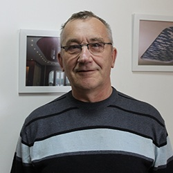
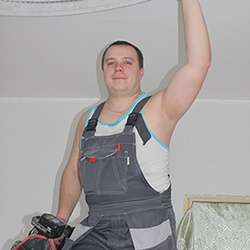
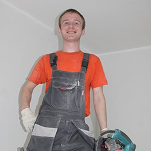

О компании
Компания «Седьмое небо» предлагает отличные цены на натяжные потолки от ведущих европейский производителей.
Натяжной потолок, изготовленный из экологически чистых материалов, не требующий особого ухода.
Возможность воплотить свои самые смелые дизайнерские решения, ведь натяжные потолки можно устанавливать в помещениях любой конфигурации, использовать различные переходы уровней, фактур, цветов и материалов
Идеально ровное полотно натяжного потолка спасет Вашу квартиру от затопления, ведь наш натяжной потолок выдерживает до 100 л воды на кв.метр!
Наши сотрудники
"Седьмое небо" - это компания, которая дорожит своей репутацией, поэтому всегда старается выполнять работу качественно и оперативно. Для этого в нашем штате работают высококвалифицированные сотрудники, которые имеют необходимые знание и большой опыт в сфере работ с натяжными потолками.
Это служит гарантией всегда отличного и долговечного результата!
- Александр Иванович начальник отдела продаж
- Антон инженер-технолог

- Сергей стаж работы более 3 лет
- Леонид стаж работы более 2 лет
- Александр Иванович начальник отдела продаж
- Антон инженер-технолог
Наши сертификаты
Для натяжных потолков с рисунком или без, как и для любой другой продукции, существует сертификат. Этот документ отражает данные лабораторных исследований, подтверждая их достоверность. Госстандарт является органом, занимающимся данным вопросом, неся потребителям неискаженную информацию, которая сможет предостеречь от опасного использования не по назначению и многих негативных воздействий. Наша компания предлагает натяжные потолки в Подольске, обладающие сертификатом качества и отвечающие самым высоким требованиям.
Мы за честный диалог. Все наши натяжные потолки с сертификатами и отвечают самым высоким требованиям качества. Вы сможете убедиться в этом сами, ниже представлены наши сертификаты!

- Более 10000 довольных клиентов
- Более 20000 м2 установленных потолков в год
- Опыт работы более 9 лет
- Более 3 крупных объектов кап. строительства в месяц
География наших работ
Компания "Седьмое небо" осуществляет монтаж и сервисное обслуживание по всему Юго-западному району Московской области.
Мы предлагаем свои услуги в городах: Наро-Фоминск, Апрелевка, Селятино, Киевский, Московский, Обнинск, Балабаново, Жуков, Малоярославец, Кубинка, Звенигород, Руза, Можайск, Одинцово, Подольск, Климовск, Щербинка, Чехов, Видное, Троицк и других близлежащих населённых пунктах.
Мы занимаемся сервисным обслуживанием, продажей, производством и установкой натяжных потолков «Lackfolie» с 2007 года. За это время, благодаря положительным отзывам заказчиков, мы смогли зарекомендовать себя как ответственных и надежных партнеров. Кроме того, создаваемые нами выгодные условия и доступные цены на всю продукцию, также располагают к плодотворному сотрудничеству.
Мы предлагаем вам приобрести у нас качественные пластиковые и алюминиевые окна, а также предоставляем услуги по отделке и установке натяжного потолка. Высокий профессионализм наших специалистов и безупречное качество изделий позволит воплотить в жизнь самые смелые дизайнерские идеи, а за счет полного ассортимента предлагаемого материала и производственных мощностей мы сделаем это в самые сжатые сроки. При заказе данной продукции вы гарантированно получаете дополнительную скидку. С помощью нашего «прайс-листа» вы сможете самостоятельно рассчитать примерную стоимость вашего натяжного потолка. Кроме этого в разделе «работы» представлены различные оформления дизайна изделий, из которых вы обязательно выберете пришедшийся по душе вариант.
Наши монтажники устанавливают потолки различной сложности уже более 9 лет.
Мы уверенны в качестве наших потолков и предоставляем бессрочную гарантию на полотна.
Вызов замерщика в день обращения.
Полный расчет стоимости до начала работ.
Более 100 различных оттенков и фактур на любой вкус.
Гибкая система расценок, акции, а также бонусы для клиентов по рекомендации.
Полотна из качественных и безопасных материалов от европейских производителей.
Мы используем только полимерно-композитные безопасные газовые баллоны.
только профессионалы
Монтаж производят квалифицированные и опытные сотрудники, используется только современное оборудование! Всем известный факт - для установки натяжных потолков из ПВХ используется взрывоопасное газовое оборудование. Именно поэтому, мы решили отказаться от использования стандартных цельнометаллических газовых баллонов, так как относительно недавно появились полимерно-композитные безопасные газовые баллоны.